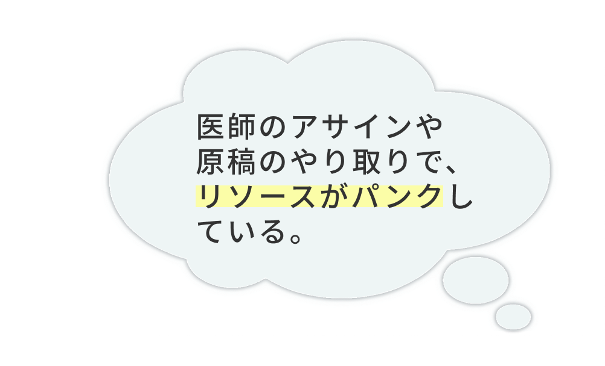
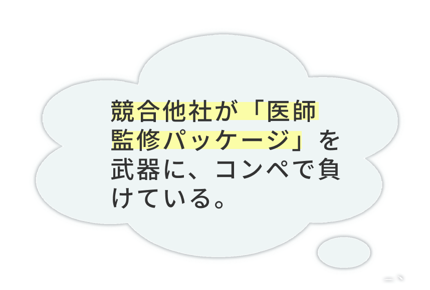
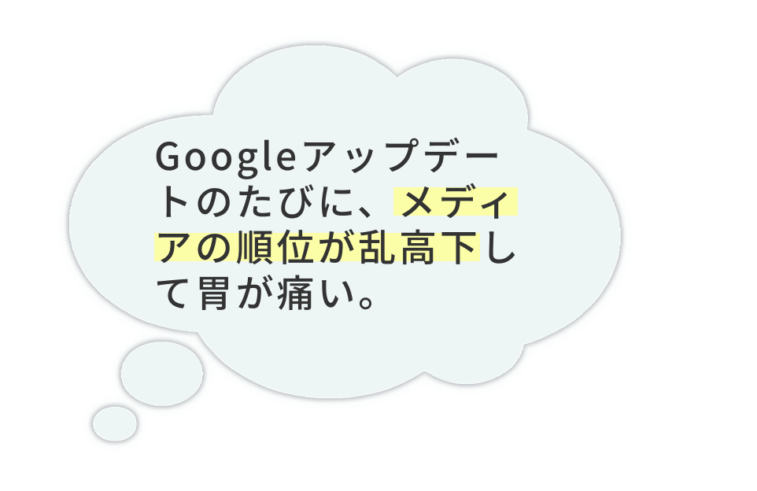

現役医師が経営する監修チーム
こんな
「お悩み」ありませんか？
-

-

-

その悩み、
｢ドクターチェック｣が
解決します！
-
アサインから調整まで
「丸投げ」OK -
「監修＋拡散」で
コンペを制する -
AI時代の
「本質的なE-A-T」対策
ドクター紹介
様々な診療科の医師が揃っています｡
専門性の高い医師による確かな監修体制をご提案｡
サービス紹介
貴社の悩みに合わせて､最適なプランをご提案｡
-
テキストテキスト
テキストテキストテキストテキストテキストテキストテキストテキストテキストテキストテキストテキストテキストテキストテキストテキストテキストテキストテキストテキストテキストテキストテキストテキストテキストテキストテキストテキストテキストテキストテキストテキストテキストテキストテキストテキストテキストテキスト
-
テキストテキスト
テキストテキストテキストテキストテキストテキストテキストテキストテキストテキストテキストテキストテキストテキストテキストテキストテキストテキストテキストテキストテキストテキストテキストテキストテキストテキストテキストテキストテキストテキストテキストテキストテキストテキストテキストテキストテキストテキスト
-
テキストテキスト
テキストテキストテキストテキストテキストテキストテキストテキストテキストテキストテキストテキストテキストテキストテキストテキストテキストテキストテキストテキストテキストテキストテキストテキストテキストテキストテキストテキストテキストテキストテキストテキストテキストテキストテキストテキストテキストテキスト
｢こんな悩みは無理かも?｣という
相談こそ､大歓迎!